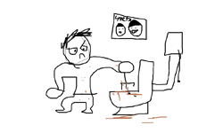
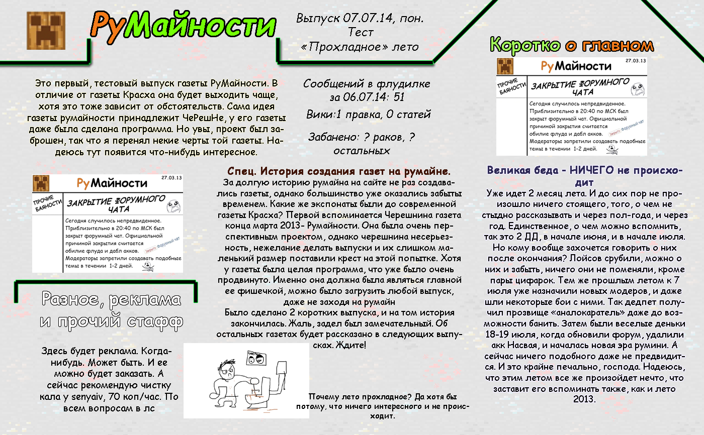
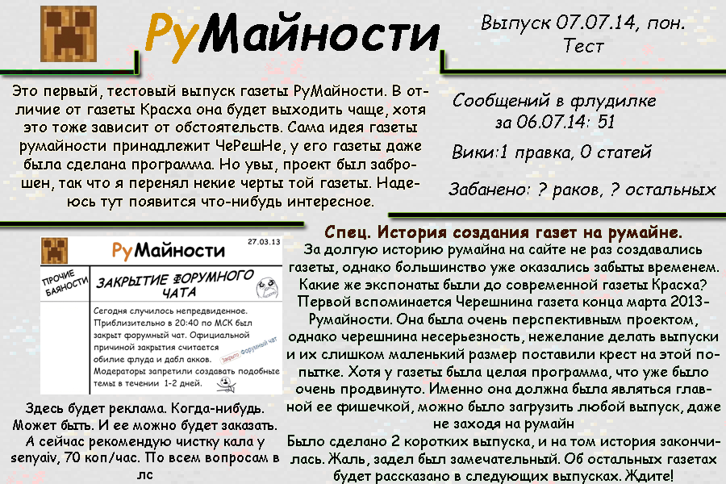

Почему лето прохладное? Да хотя бы потому, что ничего интересного и не происходит.
Мудрец
Сводка
- Страниц в ФЧ за 6 июля: 51
- Вики: 1 правка, 0 статей
- Забанено: ? раков ? остальных
О газете
Это первый, тестовый выпуск газеты РуМайности. В отличие от газеты Красха она будет выходить чаще, хотя это тоже зависит от обстоятельств. Сама идея газеты румайности принадлежит ЧеРешНе, у его газеты даже была сделана программа. Но увы, проект был заброшен, так что я перенял некие черты той газеты. Надеюсь тут появится что-нибудь интересное.
Здесь будет реклама. Когда-нибудь. Может быть. И ее можно будет заказать. А сейчас рекомендую чистку кала у senyaiv, 70 коп/час. По всем вопросам в лс
Великая беда - НИЧЕГО не происходит
Уже идет 2 месяц лета. И до сих пор не произошло ничего стоящего, того, о чем не стыдно рассказывать и через пол-года, и через год.
Единственное, о чем можно вспомнить, так это 2 ДД, в начале июня, и в начале июля.
Но кому вообще захочется говорить о них после окончания? Лойсов срубили, можно о них и забыть, ничего они не поменяли, кроме пары цифарок.
Тем же прошлым летом к 7 июля уже назначили новых модеров, и даже шли некоторые бои с ними.
Так дедпет получил прозвище «аналокаратель» даже до возможности банить.
Затем были веселые деньки 18-19 июля, когда обновили форум, удалили акк Насвая, и началась новая эра румини.
А сейчас ничего подобного даже не предвидится. И это крайне печально, господа.
Надеюсь, что этим летом все же произойдет нечто, что заставит его вспоминать также, как и лето 2013.
Спец. История создания газет на румайне.
За долгую историю румайна на сайте не раз создавались газеты, однако большинство уже оказались забыты временем. Какие же экспонаты были до современной газеты Красха?
Первой вспоминается Черешнина газета конца марта 2013- Румайности.
Она была очень перспективным проектом, однако черешнина несерьезность, нежелание делать выпуски и их слишком маленький размер поставили крест на этой попытке.
Хотя у газеты была целая программа, что уже было очень продвинуто.
Именно она должна была являться главной ее фишечкой, можно было загрузить любой выпуск, даже не заходя на румайн
Было сделано 2 коротких выпуска, и на том история закончилась. Жаль, задел был замечательный.
Об остальных газетах будет рассказано в следующих выпусках. Ждите!
Как это было
 